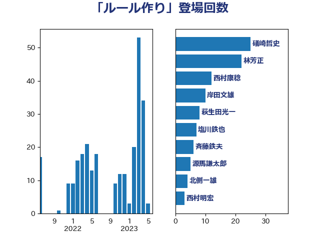

単語「ルール作り」

| 礒崎哲史 | 国民民主党 | 25 回 |
| 林芳正 | 自由民主党 | 22 回 |
| 西村康稔 | 自由民主党 | 12 回 |
| 岸田文雄 | 自由民主党 | 10 回 |
| 萩生田光一 | 自由民主党 | 8 回 |
| 塩川鉄也 | 日本共産党 | 7 回 |
| 斉藤鉄夫 | 公明党 | 6 回 |
| 源馬謙太郎 | 立憲民主党 | 5 回 |
| 北側一雄 | 公明党 | 4 回 |
| 西村明宏 | 自由民主党 | 3 回 |
| 落合貴之 | 立憲民主党 | 3 回 |
| 石原宏高 | 自由民主党 | 3 回 |
| 田村智子 | 日本共産党 | 3 回 |
| 玉木雄一郎 | 国民民主党 | 3 回 |
| 山添拓 | 日本共産党 | 3 回 |
| 小林鷹之 | 自由民主党 | 3 回 |
| 奥下剛光 | 日本維新の会 | 3 回 |
| 務台俊介 | 自由民主党 | 3 回 |
| 茂木敏充 | 自由民主党 | 2 回 |
| 湯原俊二 | 立憲民主党 | 2 回 |
| 浅田均 | 日本維新の会 | 2 回 |
| 沢田良 | 日本維新の会 | 2 回 |
| 柚木道義 | 立憲民主党 | 2 回 |
| 末松信介 | 自由民主党 | 2 回 |
| 木原誠二 | 自由民主党 | 2 回 |
| 後藤茂之 | 自由民主党 | 2 回 |
| 川田龍平 | 立憲民主党 | 2 回 |
| 山岡達丸 | 立憲民主党 | 2 回 |
| 小野泰輔 | 日本維新の会 | 2 回 |
| 大塚耕平 | 国民民主党 | 2 回 |
| 吉田統彦 | 立憲民主党 | 2 回 |
| 伊藤孝恵 | 国民民主党 | 2 回 |
| 上田勇 | 公明党 | 2 回 |
| 上杉謙太郎 | 自由民主党 | 2 回 |
| 齋藤健 | 自由民主党 | 1 回 |
| 鬼木誠 | 立憲民主党 | 1 回 |
| 高橋英明 | 日本維新の会 | 1 回 |
| 高橋はるみ | 自由民主党 | 1 回 |
| 音喜多駿 | 日本維新の会 | 1 回 |
| 青柳仁士 | 日本維新の会 | 1 回 |
| 青山大人 | 立憲民主党 | 1 回 |
| 鈴木宗男 | 日本維新の会 | 1 回 |
| 鈴木俊一 | 自由民主党 | 1 回 |
| 金子恵美 | 立憲民主党 | 1 回 |
| 金城泰邦 | 公明党 | 1 回 |
| 野田国義 | 立憲民主党 | 1 回 |
| 西岡秀子 | 国民民主党 | 1 回 |
| 若宮健嗣 | 自由民主党 | 1 回 |
| 羽田次郎 | 立憲民主党 | 1 回 |
| 篠原孝 | 立憲民主党 | 1 回 |
| 竹内真二 | 公明党 | 1 回 |
| 穂坂泰 | 自由民主党 | 1 回 |
| 石井苗子 | 日本維新の会 | 1 回 |
| 石井章 | 日本維新の会 | 1 回 |
| 矢倉克夫 | 公明党 | 1 回 |
| 田名部匡代 | 立憲民主党 | 1 回 |
| 牧山ひろえ | 立憲民主党 | 1 回 |
| 浦野靖人 | 日本維新の会 | 1 回 |
| 浅野哲 | 国民民主党 | 1 回 |
| 池下卓 | 日本維新の会 | 1 回 |
| 武藤容治 | 自由民主党 | 1 回 |
| 横沢高徳 | 立憲民主党 | 1 回 |
| 森本真治 | 立憲民主党 | 1 回 |
| 梶山弘志 | 自由民主党 | 1 回 |
| 梅村みずほ | 日本維新の会 | 1 回 |
| 柘植芳文 | 自由民主党 | 1 回 |
| 松野博一 | 自由民主党 | 1 回 |
| 杉尾秀哉 | 立憲民主党 | 1 回 |
| 末松義規 | 立憲民主党 | 1 回 |
| 新妻秀規 | 公明党 | 1 回 |
| 斎藤アレックス | 国民民主党 | 1 回 |
| 掘井健智 | 日本維新の会 | 1 回 |
| 工藤彰三 | 自由民主党 | 1 回 |
| 岩谷良平 | 日本維新の会 | 1 回 |
| 山本佐知子 | 自由民主党 | 1 回 |
| 山崎誠 | 立憲民主党 | 1 回 |
| 山岸一生 | 立憲民主党 | 1 回 |
| 山口晋 | 自由民主党 | 1 回 |
| 山口壯 | 自由民主党 | 1 回 |
| 尾身朝子 | 自由民主党 | 1 回 |
| 小熊慎司 | 立憲民主党 | 1 回 |
| 奥野総一郎 | 立憲民主党 | 1 回 |
| 吉良州司 | 無所属 | 1 回 |
| 古屋範子 | 公明党 | 1 回 |
| 今井絵理子 | 自由民主党 | 1 回 |
| 仁比聡平 | 日本共産党 | 1 回 |
| 中野洋昌 | 公明党 | 1 回 |
| 中谷一馬 | 立憲民主党 | 1 回 |
| 中田宏 | 自由民主党 | 1 回 |
| 中川宏昌 | 公明党 | 1 回 |
| 上野賢一郎 | 自由民主党 | 1 回 |